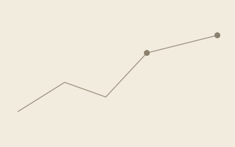

Quanto costa realmente una poltrona vuota?
Un modello semplice per calcolare il costo orario reale di ogni poltrona ferma nel suo studio.
Leggi l'articolo →Cosa dicono di noi gli studi partner, i nostri approfondimenti sul settore e le risposte alle domande più frequenti.
"In tre mesi abbiamo recuperato ore di produttività che pensavamo perse per sempre. Il check-up iniziale ci ha mostrato cose che non vedevamo da anni."
"Finalmente qualcuno che parla la lingua dello studio: numeri, persone e organizzazione insieme, non report teorici lasciati nel cassetto."
"Il network ci ha risolto un'urgenza vera: poltrona coperta in pochi giorni con un'ASO qualificata e già formata sui nostri protocolli."
[Testi segnaposto: sostituire con recensioni reali degli studi partner, appena disponibili.]

Un modello semplice per calcolare il costo orario reale di ogni poltrona ferma nel suo studio.
Leggi l'articolo →Perché il mercato fatica a trovare assistenti qualificate e come un network specializzato cambia le cose.
Leggi l'articolo →Fatturato, marginalità, EBITDA, ticket medio e tasso di accettazione preventivi spiegati in modo semplice.
Leggi l'articolo →[Testi segnaposto: sostituire con articoli reali quando disponibili.]
È un ecosistema che integra consulenza gestionale, un network di professionisti (ASO e odontoiatri) e strumenti digitali (CRM, dashboard KPI) per ottimizzare la gestione dello studio odontoiatrico, invece di offrire solo report o affiancamento a termine come una consulenza tradizionale.
Un consulente si reca fisicamente in studio per un audit economico-gestionale: raccoglie i dati dal gestionale, intervista il team e definisce i KPI di partenza (Punto Zero) su cui costruire il piano di ottimizzazione.
Il nostro sistema incrocia parametri logistici, di disponibilità, tecnico-clinici ed economici tra la richiesta dello studio e i profili validati nel network, restituendo una classifica di compatibilità (Match Score).
L'accesso al network è gratuito per i professionisti. Basta candidarsi dalla pagina Contatti: dopo una validazione di competenze e disponibilità, il profilo entra nel database e può ricevere proposte da studi certificati.
Il modello prevede un canone mensile per l'accesso alla piattaforma e al supporto continuativo, più eventuali costi variabili legati ai servizi di matching o all'Academy. I dettagli vengono definiti dopo il check-up iniziale, su misura per lo studio.